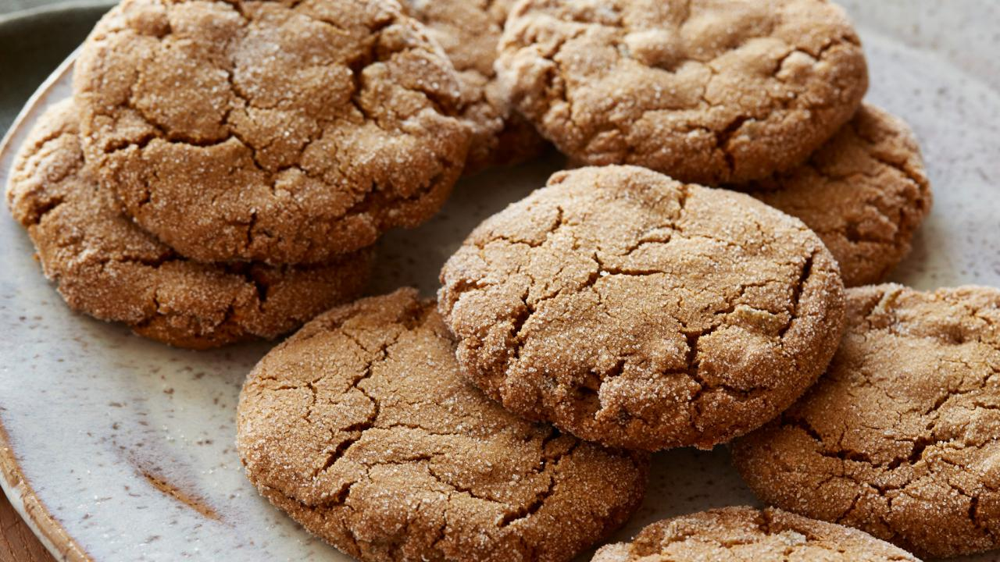

Ginger Cookies

Delicious ginger cookies that melt in your mouth!
These delicious yet easy to make ginger cookies will be one of
your favorites! These ginger flavoured cookies with cocoa undertones
will melt in your mouth and can be used as a dessert, a nice snack
to take to the road, a welcoming dish for guests or just something
to throw into the oven when you're hungry and feel
like eating something light.
Ingredients
- 2/3 cup sunflower oil
- 1 cup sugar
- 1 egg
- 1/4 cup date honey/syrup
- 2 cups flour
- 2 teaspoons bicarbonate of soda
- 1 heaped teaspoon cinnamon
- 1 heaped teaspoon ground ginger
- 1 teaspoon cocoa
- 1/2 to 1 teaspoon slat (Maldon all the way)
- Extra sugar for rolling
Steps
- Beat the oil and sugar together until they are well mixed
then add the egg and date honey and beat again.
- Combine the flour, baking soda, spices, cocoa and salt together
and slowly mix into the oil/sugar to make a soft dough.
- Roll dough into balls, roll each ball in sugar, then place on baking
tray and bake at 180C for approximately 15-17 minutes until
it is cracked on top.